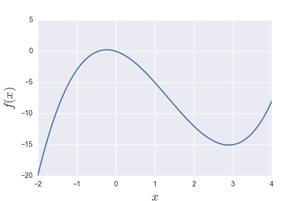

In many situations in machine learning it is useful to debug our code by making
sure our gradients are correct. One method that is used to do this, is to ensure
that the gradient that our code is giving us (be that our neural network or
some other model) is close enough to a numerical estimate of the gradient.
This can be done in a variety of ways, but her I will just look at the most
common way and a way that is more accurate, and we will demonstrate what the
implications are of using one over the other.
Forward Difference
The first time we were presented with the definition of the derivative
of \(f\), we were shown the following equation:
$$
\frac{df(x)}{dx} = \lim_{\epsilon \rightarrow 0} \frac{f(x+\epsilon) -f(x)}{\epsilon}.
$$
Given this, it seems quite natural that if you are asked to give an
estimate to the derivative, you would probably do the following:
$$
g_f(x) = \frac{f(x+\epsilon)-f(x)}{\epsilon},
$$
and you would try to set $\epsilon$ to be really small. This is
called the foward difference estimate for obvious reasons.
Let's analyse what the error on this estimate is by doing a Taylor
series expansion about \(x\). This gives us
$$
f(x+\epsilon) = f(x) + \epsilon f'(x) + \mathcal{O}(\epsilon^2),
$$
where the last term shows what the error in the estimate of
\(f(x+\epsilon)\) would be, given only the first two terms. If we
re-arrange this equation, we get
$$
f(x+\epsilon) - f(x) = \epsilon f'(x) + \mathcal{O}(\epsilon^2),
$$
and then, if we divide by \(\epsilon\) and move the error term to the
other side, we get
$$
f'(x) = \frac{f(x+\epsilon) - f(x)}{\epsilon} - \mathcal{O}(\epsilon).
$$
As we can see here, the derivative at \(x\) is given by the finite
difference estimate plus an error that scales with \(\epsilon\)
. Now, what this means is that, if we half \(\epsilon\), we can
only hope for the error on our estimate to be roughly halved also.
Kind of sucks...
Central Difference
Do not despare! There is a better solution. We can instead use the
central difference estimate. What is that you say? Well, the
definition for the gradient is just as true if we write it as:
$$
\frac{df(x)}{dx} = \lim_{\epsilon \rightarrow 0} \frac{f(x+\frac{\epsilon}{2}) -f(x-\frac{\epsilon}{2})}{\epsilon}.
$$
With this in mind, we could write the estimate as:
$$
g_c(x) = \frac{f(x+\frac{\epsilon}{2}) -f(x-\frac{\epsilon}{2})}{\epsilon}.
$$
Now let's do the Taylor series expansion on each of the teams in the
numerator. We end up with
$$
f(x+\frac{\epsilon}{2}) = f(x) + \frac{\epsilon}{2} f'(x) + \frac{\epsilon^2}{8} f''(x) + \mathcal{O}(\epsilon^3),
$$
and
$$
f(x-\frac{\epsilon}{2}) = f(x) - \frac{\epsilon}{2} f'(x) + \frac{\epsilon^2}{8} f''(x) - \mathcal{O}(\epsilon^3).
$$
The only thing we did differently in this case is that we expanded up
to second order derivatives. Now, let's subtract the first equation
from the second equation.
$$
f(x+\frac{\epsilon}{2}) - f(x-\frac{\epsilon}{2}) = \epsilon f'(x) + \mathcal{O}(\epsilon^3),
$$
and if we re-arrange we get the following
$$
f'(x) = \frac{f(x+\frac{\epsilon}{2}) - f(x-\frac{\epsilon}{2})}{\epsilon} - \mathcal{O}(\epsilon^2).
$$
Boom! Just like that our error went from linear to quadratic in
\(\epsilon\). What does that mean? Well, if we now half \(\epsilon\),
we can expect the error to go down by a quarter!
Yeah, but that's just theory...
If you don't believe me, let's look at the example below. We will create
a function and will compare the average absolute errors between
the actual derivatives and the derivatives given by both the forward and
central difference methods. That is to say, we will evaluate
$$
E_a = \frac{1}{\lvert \mathcal{X}\rvert}\sum_{x\in \mathcal{X}} \lvert f'(x) - g_a(x)\rvert,
$$
where $a$ can be either \(f\) for the forward estimate or $c$ for the
central estimate and \(\mathcal{X}\) is a set of points at which we
will evaluate.
The function is given by
$$
f(x) = x^3 - 4x^2 - 2x,
$$
and its derivative is given by
$$
f'(x) = 3x^2 - 8x - 2.
$$

Conclusion
As we can see in this case, the central difference method blows the
forward difference method out of the water, especially when \(\epsilon\)
becomes very small. We can see that, as we foresaw, if we multiply
\(\epsilon\) by a factor of \(10^{-1}\) for the forward difference case,
the error only decreases by \(10^{-1}\). However, when we do the same
for the central difference method, the error shrinks by a factor of
\(10^{-2}\)!
This really makes a difference when working on a computer with
finite precision, because \(\epsilon\) can only be so small before you
experience numerical issues.